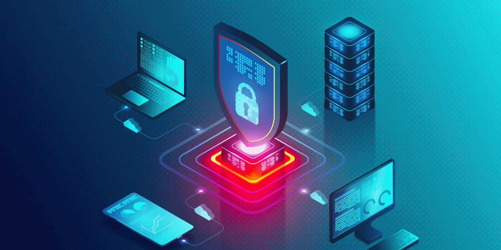
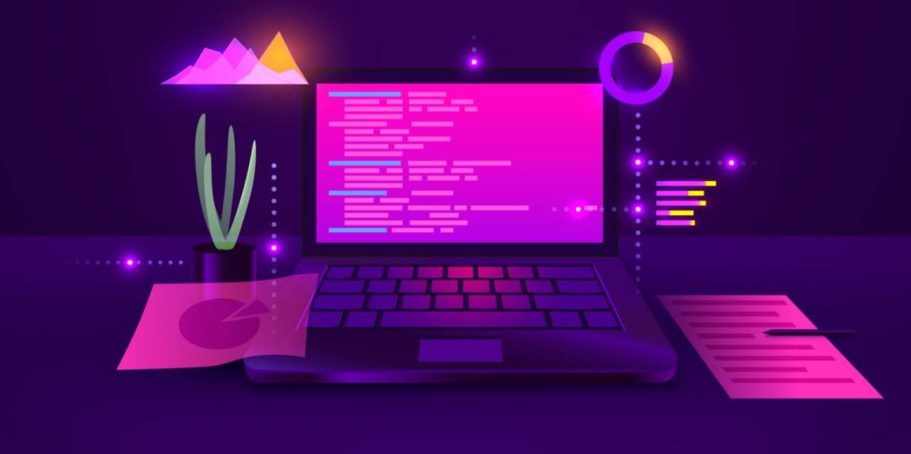
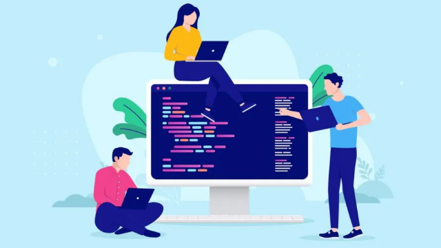

Aspirations
I have many visions for the future. Imagine someone you love, such as your grandma becomes vulnerable to a cyber attack, where criminals steal her entire life savings in the blink of an eye. Quite a horrible situation, right? Unfortunately, this is a common occurrence in today’s society, with criminals stealing billions of dollars from people who aren’t tech savvy through identity theft and credit card fraud. My Option A for the future would be to become a top-tier ethical White-Hat hacker, working for big corporations or potentially my own corporation in order to fight off cyber-criminals trying to take advantage of vulnerable people. Along with teaming up with other people, I would use my skills to help seal the loopholes that Black-Hat hackers are finding in exploiting innocent victims and ruining their lives.
My Future Plan
Learning to Code
In order to achieve this aspiration, I first have to set a strong foundation in programming languages relevant to the Cybersecurity field. By learning first how to code in simpler languages such as Python and Bash, I can learn the basics of scripting which will allow me to automate mundane tasks whilst subsequently setting the foundation for harder programming languages such as Java, C and C++. By doing so, I will become more employable as employees look for individuals who are strong in their field of work. Therefore, through hard work and determination I believe that I can learn how to programme which will ultimately help me achieve my aspiration of working in Cybersecurity.
Working in Teams
Working in teams will also help me achieve my aspiration to become a professional in Cybersecurity as it will allow me to collaborate and learn from my peers. Group problem solving has been proven to be significantly more effective as opposed to individual problem solving due to the ability to solve problems faster. Teamwork also has the ability to increase motivation, something I myself struggle with. By having somebody behind my back all the time, I can utilise my team to overcome obstacles such as tedious errors in code, learning from other’s mistakes as well as my own in order to maximise efficiency.
